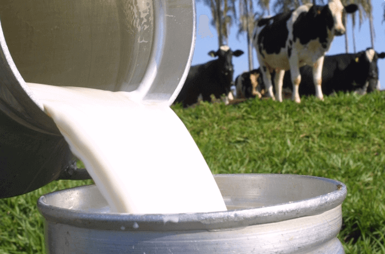

Movimento de queda no preço do leite ao produtor perde a intensidade
Desaceleração no movimento de queda no preço do LEITE no campo − que ocorre desde setembro − pode ser explicada pelo momento de transição observada em dezembro: de um lado, a demanda na ponta final da cadeia se manteve enfraquecida e pressionou as cotações dos lácteos, mas, de outro, a captação ficou mais limitada.
| Estados | Preço (R$/Litro) | Variação (%) | |||
|---|---|---|---|---|---|
| RS | 2,4533 | +0,09 | |||
| SC | 2,4932 | -0,88 | |||
| PR | 2,5949 | -0,32 | |||
| SP | 2,5214 | -0,28 |